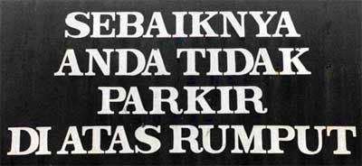

Review elements
Fakta²
In Indonesian reviews, it is common for facts about the film/book/album being reviewed to be listed before the actual written review. A film review, for example, may be prefaced with the following information.
Sutradara:
Skenario (script):
Produksi: 20th Century Fox
Situs: www.inicontohsitusfilm.com
Sinopsis
The synopsis generally includes information about the characters, the storyline, and the actors. For example:
- Peran Ferry (yang dimainkan oleh Yuyun)...
- Yuyun memerankan Ferry, seorang cewek yang...
When discussing the storyline, sequencing and linking are important. For example:
- Sesudah kejadian itu, Ferry memutuskan untuk …
- Walaupun begitu, pacar Ferry tidak senang, jadi dia …
 More sequencing ideas are included in the Pojok bahasa. Choose five sequencing words with which you are less familiar and write a sentence for each of them.
More sequencing ideas are included in the Pojok bahasa. Choose five sequencing words with which you are less familiar and write a sentence for each of them.
Komentar, opini dan rekomendasi
Some film reviews are written from the perspective of an individual. They have a personal feeling to them, and make it clear that it is the viewpoint of one individual by using ‘I’ phrases. Examples of such ‘I’ phrases include:
- Saya pikir bahwa …
- Menurut pendapat saya …
More commonly, published reviews do not use the word ‘I’ to express opinion. Therefore, you need to find alternative ways to express yourself.
- Film ini memang jelek dan aneh. Akting kurang realistis dan penonton harus berusaha supaya tidak tertidur. Orang yang cepat bosan seharusnya memilih film lain.
Sometimes you can use di-verbs (object focus) to avoid using 'I'. For example, instead of saying 'I couldn't guess the end of the story' you could use object focus and say 'the end of the story could not be predicted'.
- Saya tidak dapat menduga akhir film ini.
- Akhir film ini tidak dapat diduga.
If you want to recommend that someone does or doesn’t watch a film, read a book, or listen to an album, there are a number of ways of doing so.
- Saya menganjurkan agar orang yang gampang takut tidak menonton film ini.
- Orang yang gampang takut dianjurkan agar tidak menonton film ini.
- Sebaiknya kalau orang yang gampang takut tidak menonton film ini.

Reproduced with the permission of David Armstrong of www.foto-foto.com
 Klik di sini untuk membaca pojok budaya.
Klik di sini untuk membaca pojok budaya.
In Indonesian, it is traditionally considered impolite to make strong negative judgements or give highly critical opinions. For example, the word kurang is often used to soften criticism. You are more likely to hear someone say that they thought a film was kurang baik, rather than jelek sekali.
This trend is changing, however, when it comes to writing reviews – you will find a lot of highly critical reviews online. Look at http://www.sinema-indonesia.com for some examples.
 |